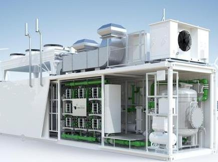
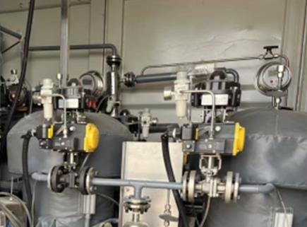
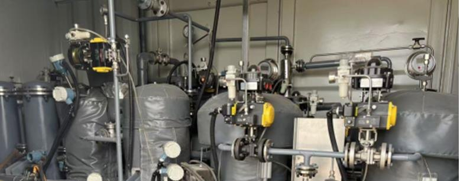
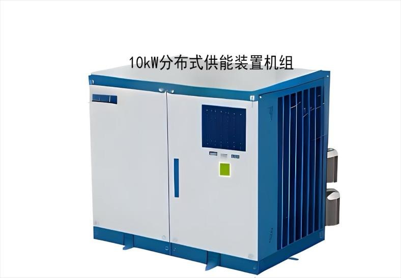
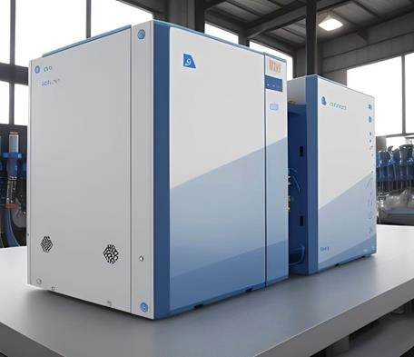
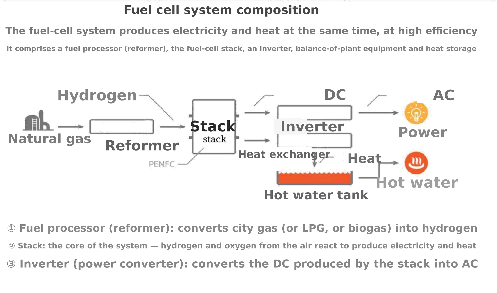
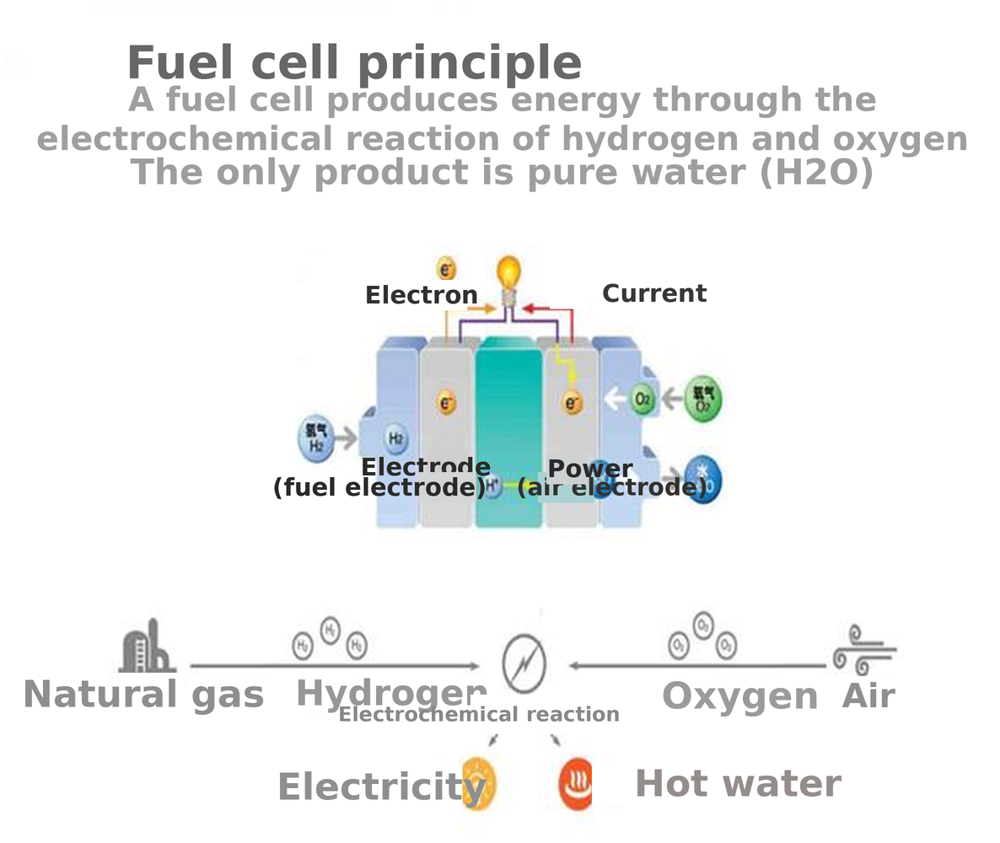
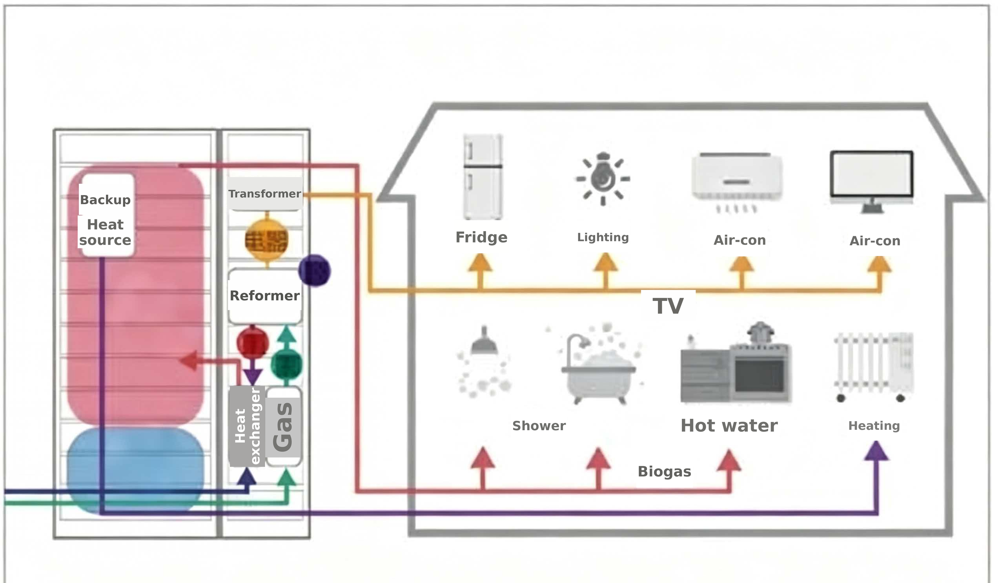

01 · Tiada bunyi
Tiada enjin, tiada pembakar
Bahagian bergerak hanya blower dan pam. Kira-kira 55 dB(A) pada satu meter — lebih senyap daripada perbualan biasa.
CHP hidrogen · 7.5–100 kW
Pembentukan semula metana dengan sel bahan api: seni bina yang sama seperti CHP sel bahan api rumah Jepun, diskalakan untuk perumahan ladang, resort, kilang dan komuniti luar grid. Dua suapan boleh digunakan: biometana 97% dalam botol, atau biogas mentah 60% terus dari kilang dengan bahagian penulenan bersepadu di hadapan. Sama ada cara, metana dibentuk semula di tapak menjadi hidrogen dan ditukar kepada elektrik dan air panas 60–70 °C — tanpa saluran paip, tanpa diesel, tanpa api di tempat penggunaan.
Enam sifar
Tiada pembakar, tiada enjin, tiada cerobong. Ini sebab terkuat memilih pembentukan semula serta sel bahan api berbanding enjin diesel atau gas — dan ia boleh diukur di pagar tapak.
01 · Tiada bunyi
Bahagian bergerak hanya blower dan pam. Kira-kira 55 dB(A) pada satu meter — lebih senyap daripada perbualan biasa.
02 · Tiada nitrogen oksida
Sel bahan api beroperasi pada 60–200 °C. Tanpa api bersuhu tinggi, NOx terma tidak terbentuk — di bawah pengesanan, bukan sekadar “rendah”.
03 · Tiada sulfur oksida
Gas dinyahsulfur di bawah 1 ppm sebelum reformer. Tiada sulfur masuk proses, jadi tiada yang keluar — tiada SO₂, tiada bau asid.
04 · Tiada habuk atau zarah
Bahan api gas, proses tertutup, tiada udara pembakaran dan tiada cerobong: tiada zarah, tiada asap hitam, tiada bau.
05 · Air tulen sahaja
Tindak balas elektrokimia menghasilkan air dan haba. Air itu cukup bersih untuk dipulihkan bagi cucian atau pengairan.
06 · CO₂ hampir sifar
Karbon ialah karbon kitaran pendek daripada sisa sawit, dan pembentukan semula memberi aliran CO₂ pekat yang lebih mudah ditangkap.
Genset diesel adalah sebaliknya pada keenam-enam perkara: 95–105 dB(A), NOx, SOx, asap hitam dan tangki bahan api. Minta helaian pelepasan bersama sebut harga.
Mengapa sesuai untuk Malaysia
Biogas sudah ditingkatkan kepada 97% metana dan dijual dalam silinder kepada rumah dan kedai. Ini bermakna bahagian sukar — pembersihan gas, pemampatan dan pengedaran — sudah selesai. Yang kurang ialah penjana senyap, penyelenggaraan rendah yang boleh menggunakan gas itu di tempat ia digunakan.
01 · Bahan api
Silinder 50 liter pada 200 bar mengandungi kira-kira 10 Nm³ metana — lebih kurang 99 kWh bahan api, atau 10 jam pada 10 kW elektrik. Silinder boleh ditukar seperti LPG, jadi tiada rangkaian gas untuk dibina.
02 · Kos
Ladang luar grid, pulau dan resort terpencil di Sabah membayar RM 0.90–1.30 setiap kWh untuk kuasa diesel setelah mengambil kira logistik bahan api, penyelenggaraan dan masa henti. Itulah angka yang disaingi oleh unit ini.
03 · Haba
Sel bahan api menghasilkan elektrik dan haba serentak: 42% elektrik, 43% boleh pulih sebagai air 60–70 °C. Perumahan kakitangan, dapur, dobi, pensterilan dan air panas hotel menggunakan haba itu terus.
Dua pilihan suapan
Reformer dan sel bahan api sama dalam kedua-dua kes. Hanya bahagian hadapan berubah — dan ia dibina dalam pakej yang sama, bukan dibeli sebagai loji peningkatan berasingan.
A · Biometana 97% dalam botol
Spesifikasi standard. Gas tiba pada 200 bar dan sudah 97% metana, jadi unit hanya perlu nyahsulfur dan penapisan sebelum reformer. Tiada yang perlu dibina atau dikendalikan di huluan — tetapi anda membayar harga gas botol bagi setiap Nm³ dan bergantung pada rantaian bekalan silinder.
RM 10,000/kW · FOB, pemasangan tidak termasuk
B · Biogas mentah, kira-kira 60% CH₄
Ambil biogas terus dari kolam kilang dan langkaui peningkatan, pembotolan serta pengangkutan. Modul penulenan bersepadu di hadapan — nyahsulfur, penyingkiran CO₂, pengeringan dan pemampatan — dibekalkan sebagai sebahagian unit kami dan menaikkan gas ke ≥95% metana yang diperlukan reformer. Pelaburan lebih tinggi daripada pilihan A, tetapi bahan api ialah biogas kilang sendiri, bukan silinder yang dibeli, dan tiada loji peningkatan berasingan.
RM 19,500/kW · FOB, penulenan bersepadu termasuk dalam unit
Kedua-dua pilihan menggunakan reformer dan sel bahan api yang sama; pilihan B hanya menambah bahagian penulenan di hadapan dalam selongsong atau skid yang sama. Kos tambahan bergantung pada aliran gas, kandungan H₂S dan CO₂, jadi ia disebut harga mengikut tapak selepas analisis gas — hantar aliran, kandungan metana dan H₂S yang diukur dan kami akan harga kedua-dua versi bersebelahan.
Proses
Tiada hidrogen disimpan. Hidrogen dihasilkan atas permintaan dan digunakan di dalam unit — ini memudahkan keselamatan dan mengelakkan bekas tekanan di tapak.
Julat
Angka bahan api pada output terkadar, 97% metana, asas LHV. Air panas pada kenaikan 50 K (20 → 70 °C). Harga ialah FOB ke Malaysia pada RM 10,000 per kW, pemasangan tidak termasuk.
| Model | Input bahan api (kW) | CH₄ (Nm³/j) | Haba (kW) | Air panas 50 K (L/j) | Harga indikatif, gas botol | Harga, biogas mentah dengan penulenan |
|---|---|---|---|---|---|---|
| 7.5 kW | 17.9 | 1.80 | 7.7 | 132 | RM 75,000 | RM 146,250 |
| 10 kW | 23.8 | 2.39 | 10.2 | 176 | RM 100,000 | RM 195,000 |
| 15 kW | 35.7 | 3.59 | 15.4 | 265 | RM 150,000 | RM 292,500 |
| 20 kW | 47.6 | 4.79 | 20.5 | 353 | RM 200,000 | RM 390,000 |
| 30 kW | 71.4 | 7.18 | 30.7 | 529 | RM 300,000 | RM 585,000 |
| 50 kW | 119.0 | 11.97 | 51.2 | 882 | RM 500,000 | RM 975,000 |
| 75 kW | 178.6 | 17.97 | 76.8 | 1,323 | RM 750,000 | RM 1,462,500 |
| 100 kW | 238.1 | 23.95 | 102.4 | 1,763 | RM 1,000,000 | RM 1,950,000 |
Pesanan minimum: 10 unit setiap penghantaran eksport. Di bawah itu kami masih memberi sebut harga — dengan caj kejuruteraan dan logistik eksport RM 60,000 sekali serta kenaikan harga unit pesanan kecil; satu unit 7.5 kW yang dihantar bersendirian menghabiskan overhed eksport sebanyak marginnya. Unit 30 kW ke atas, atau pesanan bernilai RM 300,000 ke atas, dikecualikan daripada minimum 10 unit. Asas: LHV metana 9.94 kWh/Nm³; 42% elektrik dan 43% pemulihan haba dijamin pengeluar pada output terkadar (85% gabungan) — akan disahkan semula dengan helaian jaminan setiap model. Pada biogas mentah 60% CH₄, aliran gas mentah kira-kira 1.67× angka CH₄, dan modul penulenan bersepadu disaiz mengikut aliran itu. Harga FOB pelabuhan Malaysia, pemasangan tidak termasuk: gas botol 97% pada RM 10,000/kW, biogas mentah 60% dengan penulenan bersepadu pada RM 19,500/kW. Tambang, insurans, SST, pemasangan, kerja awam, stor silinder, manifold gas dan sambungan grid tidak termasuk.
Unit
Dipasang pada skid dan diuji di kilang. Tiba sebagai satu kandang, disambung ke gas, air dan papan agihan — tiada bangunan reformer berasingan, tiada cerobong, tiada bilik enjin.



Unit kecil
Unit padat semua-dalam-satu untuk rumah, kedai atau blok resort: kira-kira 1.8 × 0.6 × 1.4 m untuk 10 kW, boleh diparallelkan untuk beban lebih besar.


Cara ia berfungsi
Tiga lukisan: komposisi sistem, tindak balas sel bahan api itu sendiri, dan P&ID rumah yang menunjukkan ke mana kuasa dan haba pergi.



Foto dan lukisan: risalah syarikat Huasen Hydrogen (Anhui) V1.4. Imej asal beresolusi tinggi akan dibekalkan untuk kegunaan cetak.
Alat kejuruteraan
Saiz, pemilihan model dan ekonomi projek. Setiap andaian boleh diubah; formulanya sama seperti kerja pra-kelayakan kami.
CO₂ menggunakan faktor pelepasan grid 0.60 t/MWh dan menganggap karbon biometana kitaran pendek. Pada RM 10,000/kW FOB unit ini berdaya saing jika kos kuasa RM 0.60/kWh atau lebih, atau jika haba menggantikan LPG atau diesel. Berbanding tarif grid bersubsidi dengan gas dibeli, ia masih marginal.
Kes contoh
Kes A · 10 kW, perumahan luar grid
12 rumah kakitangan, 10 kW purata, diesel RM 1.20/kWh dielakkan. Pelaburan RM 100,000 FOB serta pemasangan; 68,000 kWh setahun pada beban 85%; bahan api 16,300 Nm³ pada RM 1.20; O&M RM 3,000. Bersih kira-kira RM 66,000 setahun → pulang 1.5 tahun.
Kes B · 50 kW, sambung grid
Unit 50 kW yang sama berbanding tarif grid RM 0.45/kWh: RM 500,000 FOB, kira-kira RM 75,000 setahun bersih — 6.7 tahun, dalam hayat 10 tahun tetapi hanya hampir melepasi halangan 8%, dan hanya jika haba 43% benar-benar digunakan.
Skop & terma
| Termasuk | Reformer, reaktor anjakan, penulenan H₂, stack sel bahan api, penyongsang, penukar haba, kawalan, selongsong |
| Pilihan | Penulenan bersepadu di hadapan untuk suapan biogas mentah — nyahsulfur, penyingkiran CO₂, pengeringan dan pemampatan dalam pakej yang sama, harga mengikut tapak |
| Tidak termasuk | SST, tambang melebihi pelabuhan Malaysia, kerja awam, stor silinder dan manifold, pemasangan, sambungan grid, permit |
| Waranti | 24 bulan unit, 5 tahun atau 25,000 j pada stack |
| Masa penghantaran | 4–6 bulan dari PO dan analisis gas |
| Spesifikasi bahan api | CH₄ ≥ 95%, H₂S < 1 ppm, siloksan < 0.1 mg/Nm³, tiada kondensat |
| Asas harga | Versi gas botol: FOB RM 10,000/kW, pemasangan tidak termasuk, sah 90 hari, minimum 10 unit setiap pesanan eksport (unit 30 kW ke atas, atau pesanan bernilai RM 300,000 ke atas, dikecualikan). Pesanan kurang 10 unit disebut pada RM 12,500/kW serta caj kejuruteraan dan logistik eksport RM 60,000 sekali. Versi biogas mentah dengan penulenan bersepadu: disebut harga mengikut tapak. Kedua-duanya tertakluk kepada analisis gas dan tinjauan tapak. |
| Pilihan | Kuasa | Haba | Bunyi | RM/kW |
|---|---|---|---|---|
| Genset diesel | — | tiada | tinggi | 800–1,500 |
| CHP enjin gas | 35% | 43% | sederhana | 1,800–2,600* |
| CHP sel bahan api H₂ | 42% | 43% | rendah | 10,000 / 19,500 |
| NOx · SOx · habuk | tinggi | rendah | tiada | tiada |
| Solar + bateri | — | tiada | tiada | 3,000–5,000 |
* CHP enjin gas ialah kelas 500–1,000 kW; tiada model bawah 100 kW. Unit sel bahan api satu-satunya pilihan dalam julat ini.
FAQ
Ya — dengan bahagian penulenan bersepadu di hadapan. Biogas POME mentah kira-kira 60% metana dinyahsulfur, disingkirkan CO₂, dikeringkan dan dimampatkan dalam pakej yang sama, kemudian disuap ke reformer pada ≥95% CH₄. Reformer tetap perlukan metana pekat; bezanya kita buat peningkatan dalam unit, bukan anda membeli gas botol. Pelaburan lebih tinggi daripada versi gas botol dan disebut harga mengikut tapak berdasarkan aliran gas, H₂S dan CO₂.
Tidak. Hidrogen dihasilkan atas permintaan dan digunakan dalam unit.
Servis tahunan, pemangkin reformer setiap 3–5 tahun, stack setiap 5–8 tahun (25–35% harga unit). Belanjawan 3% capex setahun.
Boleh. Unit selari di sebelah AC hingga 1 MW.
Semua angka adalah anggaran kejuruteraan indikatif untuk pra-kelayakan. Sebut harga rasmi memerlukan analisis gas, profil beban dan tinjauan tapak.